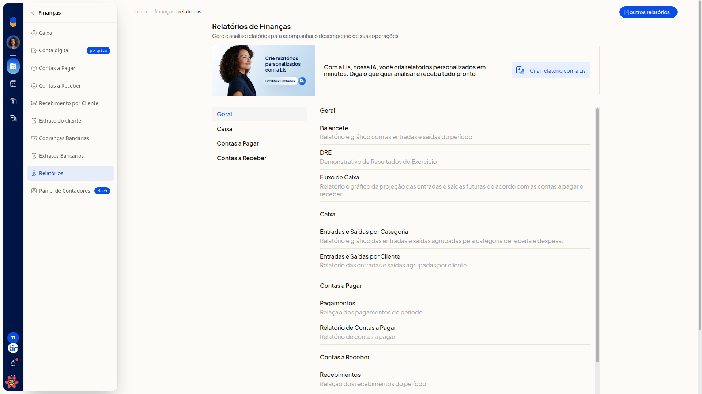
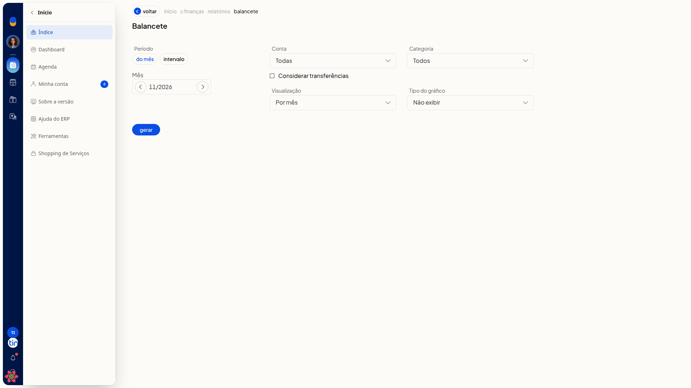
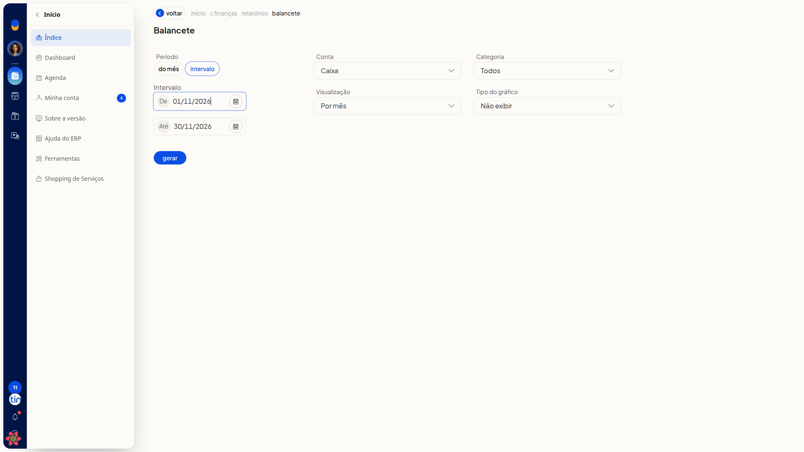
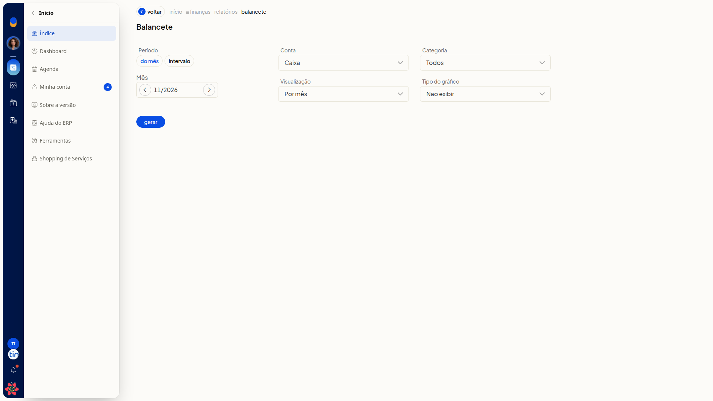

Filtrar o Balancete por mais de uma conta financeira
No Balancete, em Finanças > Relatórios, você vê as entradas e saídas de um mês ou de um intervalo. Você prepara o relatório para todas as contas financeiras ou para uma única conta.
Importante
- Não é possível filtrar por mais de uma conta ao mesmo tempo. Em Conta, a lista aceita só Todas ou uma conta financeira.
- Considerar transferências só aparece quando Conta está em Todas.
Instruções
-
Acesse Finanças > Relatórios.

-
Abra Balancete.

-
Em Período, mantenha do mês e confira Mês. O campo não é obrigatório. Use o formato MM/AAAA.
-
Para um intervalo, clique em intervalo e informe De e Até. Os campos não são obrigatórios. Use o formato DD/MM/AAAA.

-
Em Conta, escolha Todas ou uma conta financeira. Com uma conta específica, Conta mostra só essa conta.

-
Se Conta estiver em Todas, marque ou desmarque Considerar transferências para incluir ou não as transferências.
-
Clique em gerar para montar o balancete com todas as contas ou com a conta escolhida.